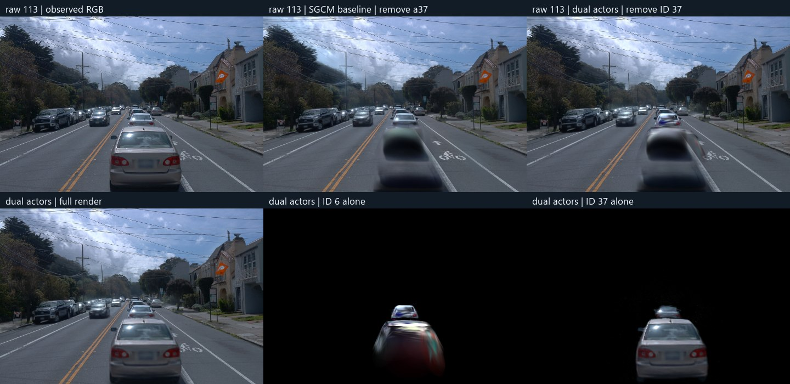
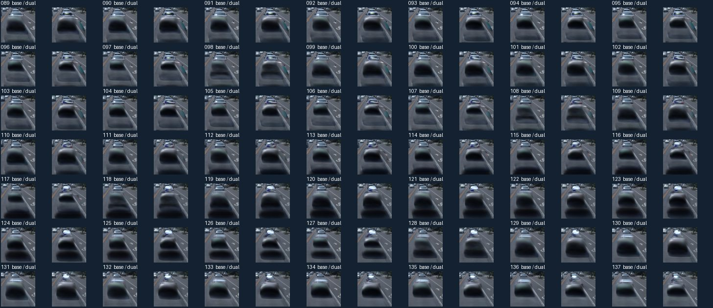

2026-11-04 · Scene008 · FRONT raw089–137 · 49 帧 BUILD 训练视角
a6 与 a37 双动态对象 10K 对照
把 a6 分到独立动态对象后，49 帧实测 a6 表面前的静态遮挡都下降，但车形残留仍在，删除 a37 后 a6 可见区的颜色误差在 49 帧都上升。 此组未达到删车质量验收条件。
训练和评估组件
原始参数
1023 行确认属于 a6
→
10K 联合训练
静态层 + 动态 ID 6、37
动态监督用两车 mask 的并集
→
联合深度渲染
屏蔽 ID 37 的透明度
保留 ID 6 和静态层
→
对照原 SGCM 基线
同一固定深度探针
raw113 和完整 49 帧
初始化时逐行迁移 1023 个 a6 高斯，保留全部 9 类参数值和原有 34 个重复样本。31 个身份未确认的候选留在静态层。三组初始行数分别为静态 590,649、ID 6 为 1,023、ID 37 为 98,452，总计 690,124。full199 只用于佐证身份，训练仍用原 49 帧。两车 mask 无重叠，动态监督采用并集。两组均采用原生损失、普通增密、静态 SGCM 和原 30K 学习率周期，实际更新 10,000 步。
raw113

上排依次是原图、基线删车和双对象删车。下排依次是双对象完整渲染、仅 ID 6、仅 ID 37。
双对象组在近处 a37 位置仍有深色车形，远处 a6 出现蓝紫色偏色。仅渲染 ID 37 时，远处 a6 的位置可见一段车身。仅渲染 ID 6 时，近处 a37 的位置也出现车形贡献。对象编号能独立开关，但训练后的外观贡献有跨车混叠。
49 帧对照
左为原 SGCM 基线，右为双动态对象组。两侧均删除 a37，按 raw089–137 顺序播放。

49 帧前景裁剪。两组近处车形贯穿序列，双对象组在远处 a6 上仍有偏色，后段可见亮斑。
同帧实测 a6 探针覆盖 31,610 像素。以固定参考深度前 0.20 m 为界测量累计静态遮挡，基线里 a6 自身的静态表示也可能计入。跨帧重投影、PVD 候选和 a37 下方道路代理分别衡量对应参考区域。RGB MAE 使用同视角已观测像素，可见 a6 为 45,418 像素，已观测道路保护区为 1,051,478 像素。被遮住的道路和 a6 表面没有编辑后真值。
可见 a6 的删车前后 RGB 差值均值从基线 0.00834 升至双对象组 0.16156。已观测道路的删车后误差在 48 帧下降。a37 原位置的道路代理仍接近 0.84，和近处车形仍可见的逐帧结果一致。
逐帧指标与像素数
检查点
10,000 步训练用时 29 分 56 秒。最终静态层 1,590,314 行，ID 6 有 353,345 行，ID 37 有 714,821 行。静态层无已迁移的 a6 来源重复。1000 步恢复点及 10000 步静态、动态、环境光与训练状态文件均保存在远端。
wm-vgpu-1011:/root/autodl-tmp/drivingeditor_repro/campaign/scene008_a6_a37_dynamic_20261104_r1/formal_dual_actor_r1/
raw113 探针首次因模块搜索路径缺失而退出。补上原评估模块路径后，复用已保存的 10K 检查点完成 raw113 和 49 帧评估。GPU 实例保持开机。